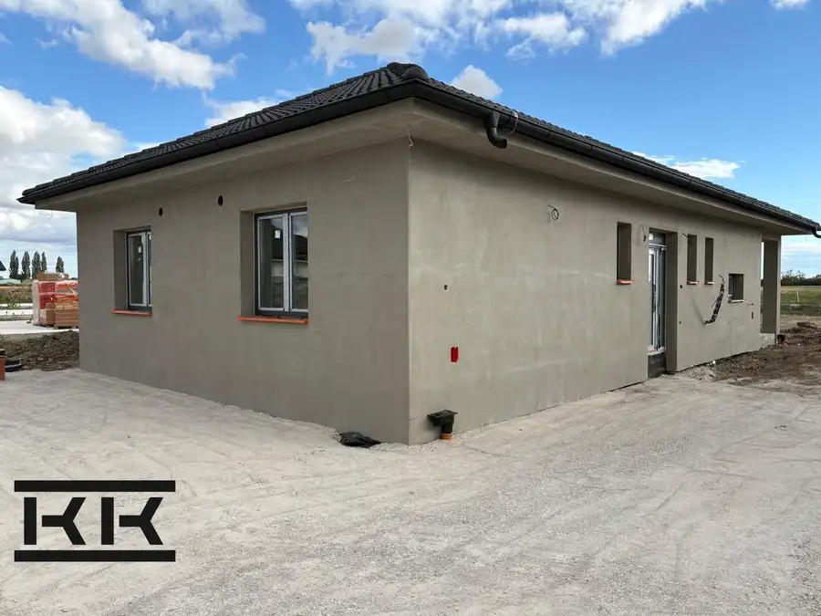
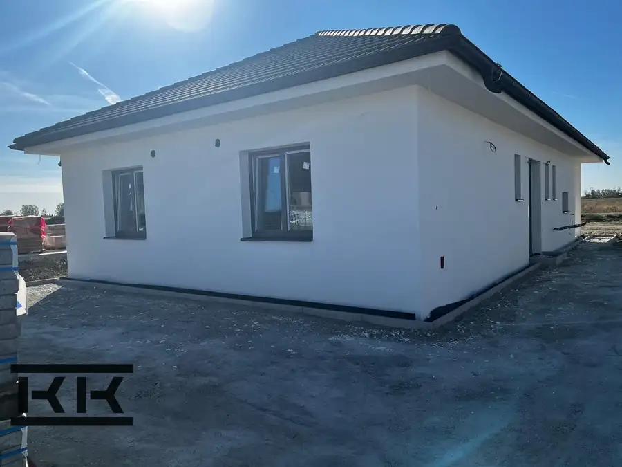

Vymeňte byt v Trnave za NOVÝ DOM so záhradou
Šúrovce
- Plocha114.9 m²
- StavDeveloperský projekt
- Energetická triedaA
O nehnuteľnosti
Ponúkame Vám rodinný Dom (VARIANT 2, RD 7) ) , ktorý vám ponúkame má 114,90 m² úžitkovej plochy , premyslene navrhnutého priestoru plus čiastočne prestrešenú terasu s výmerou 38,1 m2. Sem dáte pohodlný vonkajší nábytok, ale i kvety a vychutnáte rannú kávu či grilovanie s rodinou a priateľmi.Srdcom domu je svetlá a priestranná obývacia izba prepojená s kuchyňou a jedálňou s výmerou spolu 35,60 m2 . To je miesto, kde budete tráviť spoločné večere, rodinné oslavy aj obyčajné chvíle.Nočnú časť domu tvoria tri izby, ktoré ponúkajú dostatok súkromia pre každého člena rodiny, praktické úložné priestory a komfort, ktorý oceníte každý deň.Čo je tiež dôležité ? Je to:- napojenie na všetky inžinierske siete (okrem plynu)- príprava na klimatizáciu- príprava na optický internet- príprava na alarm alebo kamerový systém- 3 parkovacie miesta- kolaudácia v cene domu- kompletný hypotekárny servisCENA TOHTO DOMU JE: 270.600,- EUR ako „holodom alebo ... ak nechcete mať starosti , ponúkame Vám kvalitné vybavenie Vášho nového domova vo vyhotovení „štandard, ktorý zahŕňa: laminátové/vinylové podlahy, obklady a dlažby v kúpelni a WC, batérie GROHE, vaňa alebo sprchový kút, interiérové dvere a zárubne, kľučky. Cena tohto „štandardu je 27.500,- EUR. A vtedy sa nasťahujete do hotového. CELKOVÁ CENA TOHTO DOMU VRÁTANE KVALITÉHO ŠTANDARDU je: 298.100,- EUR. DOM PRIAMO OD DEVELOPERAPrečo si vybrať Šúrovce?Pokojné vidiecke bývanie s kompletnou vybavenosťou Výborná dopravná dostupnosť do Trnavy - 13 km , Sereď 6 km, Hlohovec 17 kmIdeálne pre rodiny aj aktívny životný štýlVýhodný pomer ceny nehnuteľnosti a kvality bývaniaNová asfaltová cyklotrasa smer Sereď-Šúrovce-SiladiceSú chvíle, keď človek vie, že našiel to správne miesto. Miesto, kde deti môžu bezpečne vyrastať, kde rána začínajú pokojom a večery končia oddychom na vlastnej terase.Presne tak vzniká nový projekt 10 moderných rodinných domov v Šúrovciach, len pár minút od Serede a 13 km od Trnavy, PRIAMO OD DEVELOPERA.Dom, ktorý myslí na váš každodenný život. Dom, ktorý je vďaka tepelnému čerpadlu energeticky nenáročný a bude stáť na pozemku s výmerou 540 m2.Prídite sa pozrieť, ako vzniká naša nová lokalita v Šúrovciach ! Pretože "je lepšie raz vidieť ako stokrát počut" !Volajte:Ing. Iveta Hestericová 0905 812 208 alebo píšte: hestericova@kukla.sk
Parametre
| Druh | Rodinný dom |
|---|---|
| Druh domu | Bungalov |
| Dátum zverejnenia | 13. 7. 2026 |
| Energetická náročnosť | Nízkoenergetický |
| Energetický certifikát budovy | A |
| Orientácia | Juhovýchodná, Juhozápadná |
| Plocha pozemku | 540 m² |
| Počet izieb / miestností | 5 |
| Počet kúpeľní | 1 |
| Počet nadzemných podlaží | 1 |
| Počet spální | 1 |
| Počet vonkajších parkovacích miest | 3 |
| Prístupová komunikácia | Asfaltová |
| Rok kolaudácie | 2027 |
| Rok výstavby | 2026 |
| Stav nehnuteľnosti | Developerský projekt |
| Telekomunikácie | Internet |
| Terás | 1 |
| Terén pozemku | Rovinatý |
| Typ | Predaj |
| Typ konštrukcie | Tehlová |
| Vybavenie | Terasa, Vonkajšie parkovacie miesto, Technická miestnosť |
| Vykurovanie | Podlahové, Tepelné čerpadlo |
| Zastavaná plocha | 160 m² |
| Úžitková plocha | 114.9 m² |
Kde to je


Mohlo by Vás zaujímať

DomNové10 229 900 €4-izb bungalov PRED KOLAUDÁCIOU v blízkosti Galanty Topoľnica 98.5 m² IDEME KOLAUDOVAŤ TENTO DOM, ktorý ponúka:* 98,50 m2 úžitkovej plochy* pozemok 497 m2* plus prestrešenú terasu 25,14 m2* 4 izby* kompletné dokončenie…
DomNové10 218 000 €Váš nový dom v okrese Galanta Topoľnica 98.5 m² Nový 4-izb. bungalov tesne pred dokončením a kolaudáciouTento dom ponúka:* 98,50 m2 úžitkovej plochy* pozemok 497 m2* plus prestrešenú terasu 25,14…